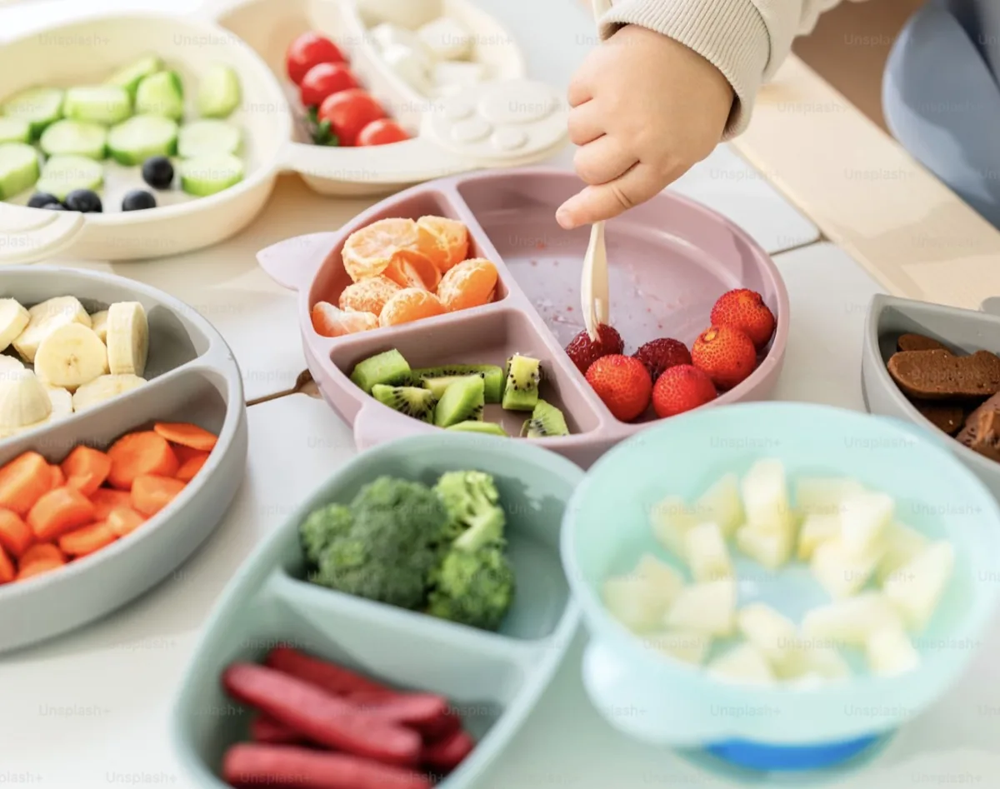
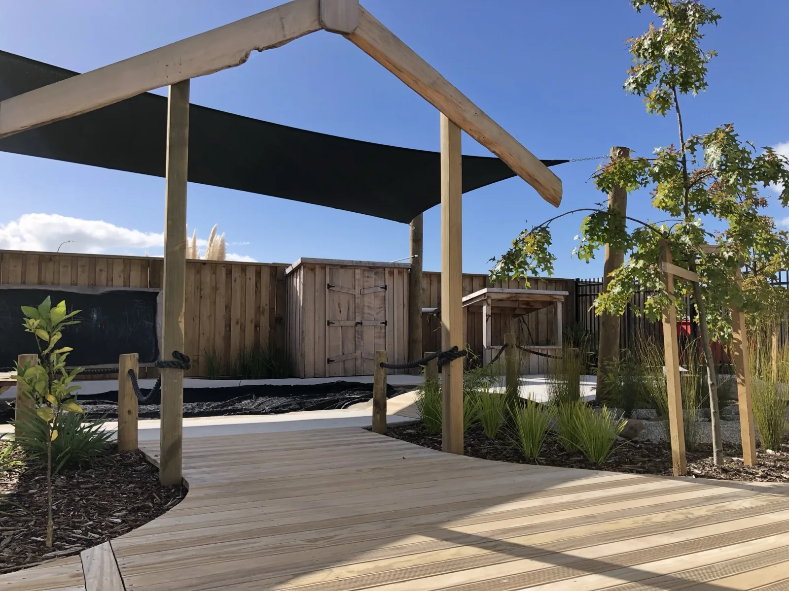
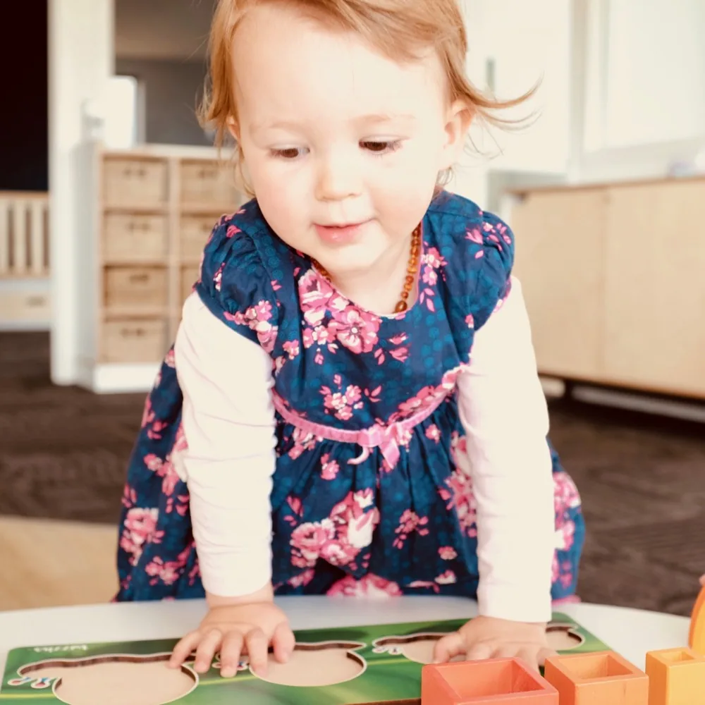
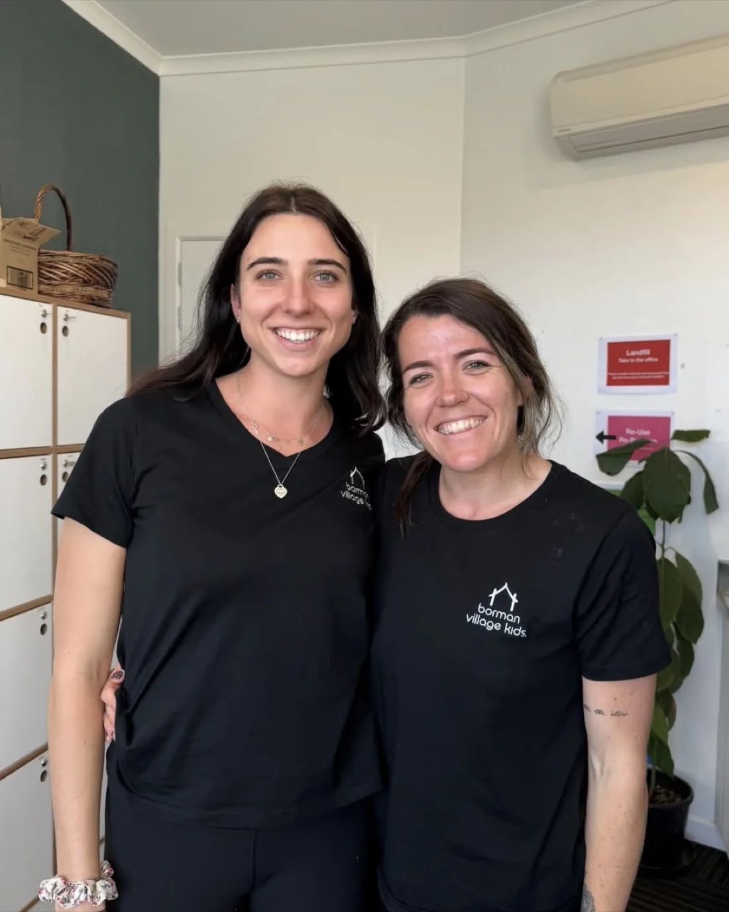
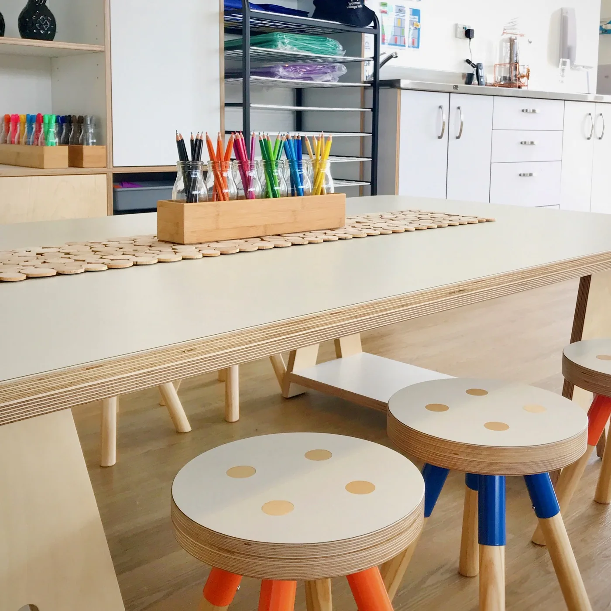

Ngā mihi nui, welcome
A home away from home, for your little one.
A purpose-built early learning village where your tamariki are cared for, known by name, and free to explore.
Our village
A calm, happy place where your child belongs.
Somewhere your child feels safe and settled, and somewhere you do too.
We are a small community of tamariki, whānau and kaiako. We take the time to know your family and reflect your hopes for your child. Our door is always open.

What matters to us
The things that make the days good.
Small choices, made with care every day, from the kai on the table to the people in the room.


Purpose built, by us
Our story →
A centre designed around how children actually grow.
We designed our centre ourselves, with classrooms shaped to each age and spaces that exceed the Ministry's requirement for room per child.
Inside and out, we use natural materials and leave plenty of room to explore, dig, build and rest.
Kai made with love
Good food is the heart of a good day. Ours is cooked fresh, right here.
- Three meals, every dayMorning tea, lunch and afternoon tea, prepared on-site.
- Organic and whole foodsWe choose fresh, whole ingredients wherever possible.
- Every child catered forAllergies and dietary requirements are always looked after.
- Shared at the tableKai time is a calm, social part of learning together.
One village, three stages
From first steps to school-ready.
As your child grows, they move gently through spaces built for each stage.
A day at the village
Come and visit →
Precious moments, precious tamariki.



Stay close, every day
See the little moments, as they happen.
We record your child's learning through Storypark, a secure online space where we share photos, stories and progress, privately with you.
Local walks and excursions are part of our curriculum, and our open-door policy means you are welcome any time.
Secure & private
Photos & stories
Open-door policy
We would love to meet you
Come and see if we are the right fit.
The best way to know is to visit. Enrolment is subject to availability, so send an enquiry and we will be in touch.